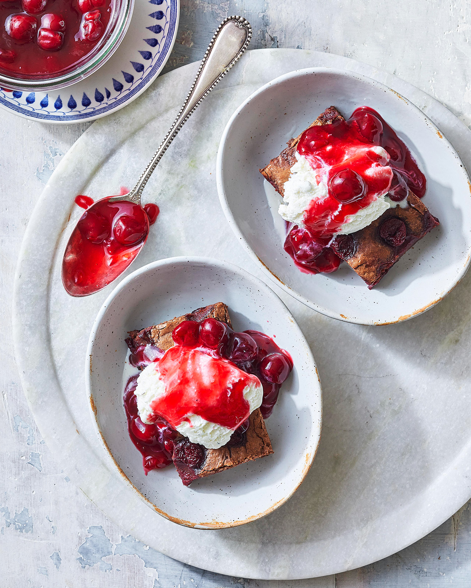
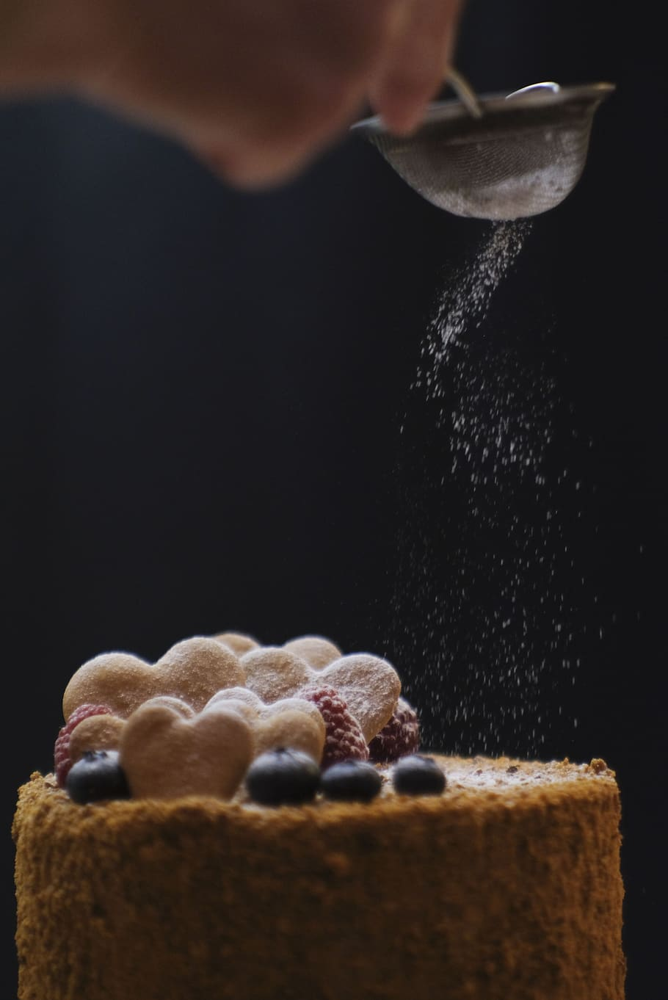

Alemania? Dulces? Nosotros
Los postres alemanes seducen a los sentidos con sus texturas reconfortantes y sus sabores familiares. Cualquiera que haya vivido o haya pasado al menos una semana allí y haya prestado atención a las costumbres alemanas te dirá que sienten un gran amor y respeto por los dulces. Por tal motivo nuestro trabajo es claro: remomerar y revitalizar la mesa dulce alemana.

Elaboración? Facil:
Los productos se elaboran a la noche y a la madrugada, listos para consumirlos por la mañana temprano. Todos los panes, facturas, tortas y cuadrados dulces se cocinan en un horno tradicional de ladrillos refractarios y con las mismas recetas que se van pasando generación tras generación.. Todo es la tradición.